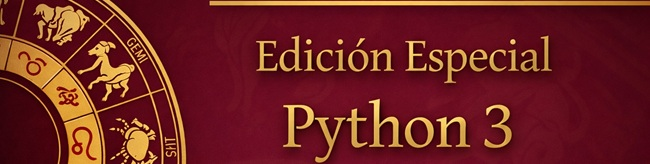
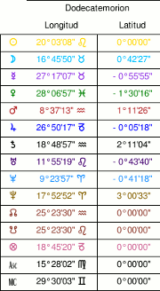

Morinus Python 3
¡Hola amigos! Me complace presentaros esta Edición de Morinus para Python 3. Os recomiendo que leáis al completo esta breve página en la que están resumidas las Novedades de esta versión, como los detalles de esta configuración específica respecto a la versión anterior de Elías D. Molins (v8.0) y Roberto Luporini (v7.3).
He dedicado algunas horas a adaptar Morinus a Python 3 y una versión más actualizada de wxPython, y aún me queda mucho por hacer. Recientemente he comenzado a modificar Morinus.
¡Espero que lo disfrutéis!
Javier JIPE
Novedades: Nuevas funcionalidades
A continuación, los cambios y nuevas funciones que Elías D. Molins realizó sobre la versión v8.0:
ESTRELLAS FIJAS
He elevado el número máximo de estrellas fijas a tener en cuenta de 40 a 200. Pueden seleccionarse en el menú Opciones->Estrellas Fijas.
He desarrollado la funcionalidad Aspectos a Estrellas Fijas. En la tabla del menú Tablas->Asp. Estrellas Fijas, podréis ver todos los aspectos de cúspides, planetas y demás significadores a las estrellas. Debajo de cada Aspecto, está indicado el orbe en fracción decimal.
Están seleccionadas por defecto las Estrellas Fijas de Vivian Robson. Su libro está descatalogado, pero disponible para descarga desde este enlace del Campus. ;)
Las estrellas en las que sólo figuraba la nomenclatura en el archivo fixstars.cat, han sido bautizadas con el nombre que asigna Vivian Robson para mayor comodidad.
En general las Estrellas Fijas tienen un orbe por defecto de 1.5°, excepto las más destacadas, de importante magnitud o los conjuntos de estrellas (p.ej. Sirio, Spica, Pléyades,etc.), a las cuales he asignado el orbe con el que trabaja el compañero y astrólogo investigador Carlos Carneado; éste es el orbe que utilizo en mis cálculos, pues tiene sentido que a menor magnitud de una estrella, esta tenga mayor orbe.

DODECATEMORIAS
He importado de la versión Tradicional de Morinus el Mapa de Dodecatemorias. Ahora puede seleccionarse desde Opciones->Apariencia activando Dodecatemorias. Esta opción dibujará en el mapa las dodecatemorias de los significadores y ejes importantes.
Aunque no concibo porqué no ha caído ningún otro desarrollador antes que yo, he añadido una funcionalidad que considero evidente pero que ningún otro programa tiene: El cálculo exacto automatizado de dodecatemorias. En Tablas->Dodecatemorias se muestra una tabla con el grado, minuto y segundo exacto de una dodecatemoria. Aunque muchos compañeros astrólogos no tienen ni idea de cómo usar esto, esta funcionalidad es útil para determinar los aspectos de las dodecatemorias a significadores natales y estrellas fijas; desvelando a nivel predictivo lo más oculto de la carta.

CONFIGURACIÓN
He fijado la configuración de las Direcciones Primarias. Esta configuración utiliza por defecto Naibod y el sistema de casas Plácidus (semiarco); por supuesto, todo ello pudiéndose reconfigurar en Opciones->Claves Primarias y Opciones->Direcciones Primarias.
Hemos añadido en el menú Edición Especial enlaces directos a la Campus, para que con comodidad podáis comprobar los nuevos libros y artículos que subimos cada semana.
Si no os gusta la nueva fuente planetaria y preferíis la anterior, podéis ir al directorio Res/ y usar la anterior cambiando el nombre de Morinus-old.ttf a Morinus.ttf.
Y hasta aquí todos los cambios notables. Os deseo que realmente disfrutéis del programa. ¡Un fuerte abrazo!
Elías D. Molins
Javier JIPE
Licencia: Sobre el Software Libre
Videos recomendados:
El software libre es la denominación del software que respeta la libertad de todos los usuarios que adquirieron el producto y, por tanto, una vez obtenido el mismo puede ser usado, copiado, estudiado, modificado, y redistribuido libremente de varias formas. Según la Free Software Foundation, el software libre se refiere a la libertad de los usuarios para ejecutar, copiar, distribuir, y estudiar el mismo, e incluso modificar el software y distribuirlo modificado.
Para más información puedes visitar la mayor fuente de conocimiento libre, la Wikipedia: Software Libre